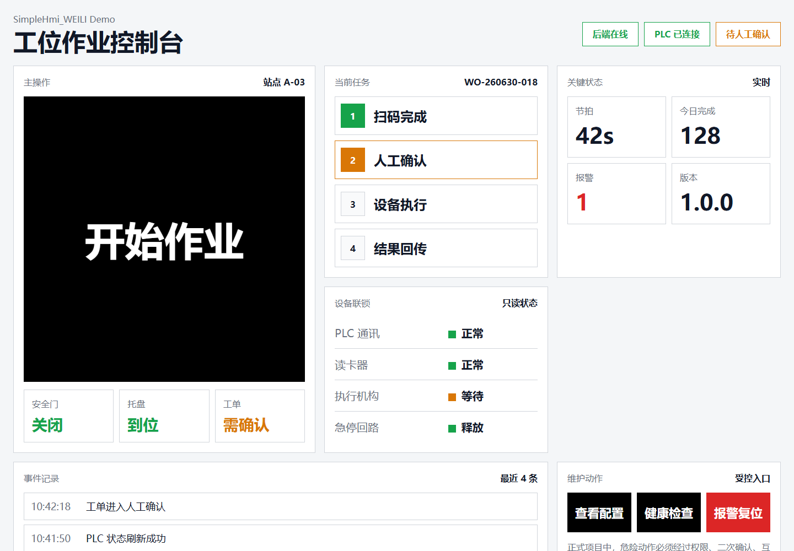

- 不懂代码，但能描述工业现场需求的人。
- 想借助 AI 快速生成 HMI / 工控前后端系统的人。
- 需要把触摸屏、工控机、PLC、扫码枪、读卡器、机器人等现场设备接入成可验收系统的人。
- 想让 AI 按规范生成，而不是生成一次性 Demo 的开发者。
Featured AI Engineering Project
SimpleHmi_WEILI
让普通开发者借助 AI，生成可运行、可部署、可验收的工业系统。
把自然语言现场需求转化为可运行、可部署、可验收系统的 AI-first 工程规范。它不是代码生成 Demo，而是一套约束 AI 如何读取上下文、选择技术栈、规划系统、接入设备、执行测试、部署和提交验收证据的工作系统。
What It Is
它解决的问题
很多工业现场项目不是败在页面，而是败在需求说不清、设备状态没闭环、接口契约不稳定、配置写死、Mock 冒充真实数据、部署不可回滚、验收没有证据。
SimpleHmi_WEILI 把这些问题前置成 AI 可读取、可搜索、可执行的规范。AI 不再自由发挥写一个普通 Web Demo，而是按工业现场的主链路、设备接入、配置、部署和验收规则生成系统。
它不是低代码平台，也不是工业互联网大平台，不默认微服务、Docker、Kubernetes、消息队列或复杂 ORM；它只约束 AI 生成一个最小、真实、可部署、可验收的现场系统。
Core Workflow
核心路径
描述现场
读取规范
生成规划
生成系统
自检修复
输出验收证据
- 小白克隆仓库。
- 把项目主目录添加到 AI Agent。
- 用自然语言描述现场。
- AI 读取 README、START_HERE、AGENTS、SIMPLE_HMI、ENGINES、WEILI_LADDER 和 docs/00_INDEX。
- AI 先规划，不直接写代码。
- AI 生成前端、后端、配置、设备 adapter、部署脚本和验收清单。
- 出错时，AI 按自修复规范搜索、定位、修改和复测。
- 最终输出验收证据。
Repository Map
核心入口
START_HERE_FOR_BEGINNERS.md
小白唯一入口：告诉用户如何把仓库交给 AI、如何描述现场、如何启动项目生成。
AGENTS.md
AI 工作总控：定义读取顺序、工作阶段、问题搜索规则和完成证据。
SIMPLE_HMI.md
总原则：真实现场优先、主链路优先、默认禁止 Mock、完成必须有证据。
ENGINES.md
技术栈边界：约束 AI 默认使用 React、TypeScript、Vite、Node.js、Fastify 等轻量方案。
WEILI_LADDER.md
最小实现梯子：约束 AI 能不做就不做，能用现有能力就不用新框架。
docs/00_INDEX.md
AI 中心索引：告诉 AI 不同阶段应该读哪些规范。
templates/
AI 输出模板：需求澄清、架构规划、接口契约、设备接入、配置、验收等模板。
checklists/
验收门禁：需求、架构、契约、设备、配置、去 Mock、部署、现场验收、AI 完成证据。
examples/minimal-hmi-system/
最小可运行样板：展示一个合格的最小工业 HMI 系统应该如何组织。
Demo Preview
最小样板项目
仓库内提供 examples/minimal-hmi-system/，用于展示一个最小工业 HMI 系统的组织方式：前端 HMI 页面、Fastify 后端、共享 contracts、外置 config、health check、no-mock 检查和验收文档。
这个样板不是完整平台，也不是客户项目。它只回答一个问题：AI 生成的新项目，最低应该像什么样。

页面截图仅用于展示 HMI 信息密度、状态层级和操作组织方式，不代表真实设备链路。
查看最小样板源码How To Use
推荐给 AI 的第一条指令
我不懂代码，只会描述工业现场。
请读取当前仓库中的：
- README.md
- START_HERE_FOR_BEGINNERS.md
- AGENTS.md
- SIMPLE_HMI.md
- ENGINES.md
- WEILI_LADDER.md
- docs/00_INDEX.md
你现在是一个工业现场 HMI / 工控系统生成助手。
请先根据我的现场描述生成：
1. 需求澄清
2. 主链路分析
3. 最小可运行系统范围
4. 不做范围
5. 前后端架构
6. 设备 / 数据 / 页面 / 接口清单
7. 风险点
8. 验收标准
不要直接写代码，先输出规划。
我的现场描述如下：
……Boundary
不做什么
不做平台化幻觉
不做低代码平台，不做工业互联网大平台，不把具体客户项目代码沉淀为通用框架。
不默认复杂栈
不默认微服务、Docker、Kubernetes、消息队列、复杂 ORM；能用轻量方案解决，就先保持最小可运行。
不伪装真实链路
不做设备 SDK 大合集，不把 Mock 数据伪装成真实设备，不用页面好看代替验收证据。
Failure Modes
失败模式
这些是 AI 在没有规范约束时，生成工业现场系统最容易出现的失败模式。SimpleHmi_WEILI 把它们前置成可检查、可拦截的规则。
未理解需求就开始写代码
跳过需求澄清和主链路分析，直接进入代码生成，导致系统方向偏离现场真实需要。
随意改变技术栈
不按技术栈边界行事，引入不必要的框架和依赖，增加部署和运维复杂度。
使用 Mock 冒充真实完成
用 Mock 数据伪装真实设备链路，页面看起来正常但现场无法验收。
只验证前端页面
只检查页面是否好看，忽略后端、设备、部署和验收证据。
忽略部署
不规划如何在工控机、触摸屏等现场环境部署和守护，系统停留在开发机。
忽略设备和网络边界
不考虑 PLC 并发限制、串口唯一归属、子网隔离等现场约束，运行时冲突频发。
修复一个问题引入另一个问题
缺乏自修复规范和复测流程，修一处坏一处，系统稳定性持续下降。
文档与代码不一致
规范、接口契约、设备清单等文档与实际代码脱节，后续接手者无法判断真实状态。
模型口头宣称完成但没有证据
没有验收门禁和完成证据，无法判断系统是否真正达到可验收状态。
Abstraction Source
这些规则从哪里来
SimpleHmi_WEILI 不是先写规范再寻找应用场景，而是从两个真实项目中的失败、修复、部署和联调经验中，逐步提取公共模式。
TASK-013 数字月台
多终端协同、PLC 并发写保护、SDK 进程隔离、版本发布回滚、Windows 服务自愈等真实问题。
TASK-010 智能餐饮机器人产线
遗留系统阅读、设备 Adapter 拆分、串行任务队列、状态缓存、硬件模拟面板等真实问题。
规范的每一条约束，都对应着现场联调中真实踩过的坑——Mock 冒充真实、配置写死、部署不可回滚、验收没有证据。
What It Proves
这个项目证明了什么
SimpleHmi_WEILI 证明了一套 AI-first 工程规范能够把工程经验转化为可执行、可验收的工作系统。
- 能从具体项目中提取公共模式，而不是停留在一次性 Demo。
- 能设计 AI Agent 的上下文和行为边界，约束 AI 按规范生成。
- 能把工程经验转成可执行规范，而非只存在于个人头脑中。
- 能建立阶段化交付和验收体系，每个阶段都有明确的门禁和证据。
- 能降低后续人员接手复杂系统的成本，文档、契约、清单与代码保持一致。
它不替代具体的现场开发，而是约束 AI 如何完成现场开发；它不保证项目一定成功，但保证失败模式可被发现、可被拦截、可被回滚。